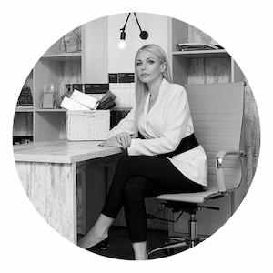
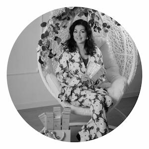
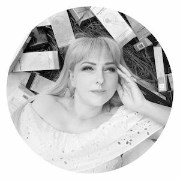

Про клініку
Нарешті Вам не потрібно їздити до Києва у дорогі клініки із непомірно роздутими цінами, записуючись за 3 тижні вперед…Так, саме тут, у серці Ірпеня Ви можете зануритися в атмосферу релаксу, краси та якісного сервісу.
Подаруйте собі це задоволення! Косметологічна клініка BZ рада запропонувати величезний вибір процедур по косметології та догляду за тілом, що усувають практично всі візуальні недоліки.
Ін’єкційна косметологія, контурна пластика, класична косметологія, лікувальний масаж, пресотерапія, депіляція, лікування шкіри голови, антицелюлітні програми – це далеко не весь перелік пропонованих нами послуг. Наші лікарі – професіонали найвищого ґатунку.
У клініці представлені їх дипломи та сертифікати, що є ознакою постійного розвитку спеціаліста, його глибоких знань та розуміння всіх деталей і аспектів лікування. Ми гарантуємо своїм пацієнтам безпеку і чудовий результат, який виправдає будь-які очікування.
Відгуки
Анфиса
29.09.2021
Спеціаліст: Любаренко Інна Василівна
Послуга: Депіляція. Шугарінг
Дякуємо за оздоровчий масаж!!! Дуже хороший масаж і Професіоналізм Наталії налаштував мене на здоровий спосіб життя. Дякую!
Наталя
29.09.2021
Спеціаліст: Старицька Наталія Михайлівна
Послуга: Масаж
Інночка, Ви просто супер майстер, професіонал свого напряму, велике спасибі, завжди ходитиму тільки до Вас, я знайшла найкращого майстра.
Послуги
Контурна пластика
Процедура контурної пластики є однією з найбільш затребуваних в естетичній медицині, адже саме за допомогою неї в короткі терміни та з мінімальним реабілітаційним періодом можна надати обличчю бажаних гармонійних обрисів.
Плазмотерапія
Плазмоліфтинг або PRP-терапія – це сучасний метод омолодження шкіри, що ґрунтується на здатності плазми до стимуляції регенерації тканин. PRP-терапія включає підшкірні ін'єкції власної плазми крові пацієнта.
Наші фахівці
Яна Пухова
Таємниця хорошого косметолога полягає в тому, аби грамотно вибирати препарати. Бо в руках лікаря – безпека, здоров'я і краса пацієнта. Мені важливо, щоб результат був прогнозованим і безпечним. Тому постійно вчуся у найкращих і вкладаю час і сили в професійний ріст. Працюю з офіційними компаніями-дистриб'юторами, які привозять до України перевірені препарати з доведеною ефективністю.
Улюблена процедура – поєднання чотирьох препаратів у техніці 4М: Meso-Wharton P199, Meso-Xanthin F199, Mesosculpt C71, Mesoeye C71. Вони працюють з ознаками старіння, створюють чіткий овал обличчя, покращують якість шкіри.
Юлія Сикало
Мій підхід – віддача улюбленій справі, постійне підвищення кваліфікації у найкращих українських та іноземних фахівців, а також ліцензовані препарати.
Улюблений – з лінії ABG lab, Мезоксантин. Це єдиний на сьогодні препарат, який працює на епігенетичному рівні. Він допомагає відновити пошкодження ДНК клітин шкіри, звільняє їх від токсинів, захищає від агресії навколишнього середовища, усуває запалення. Після його застосування обличчя починає сяяти.
Ольга Гобжелян
Я з дитинства мріяла стати дерматологом, носити білий халат, допомагати людям вирішувати проблеми зі здоров'ям, виписувати ліки і давати чарівні рецепти. Впевнена, що основа краси – це здоров'я. І нехай косметолог – вузька спеціалізація, ключ до успіху – медична освіта. Саме вона допомагає косметологові зрозуміти особливості будови шкіри, волосся і нігтів, виявити проблеми і вирішити їх.
Замість улюбленої біоревіталізації цього сезону я волію більш сучасну і ефективну процедуру 2М, яку роблю препаратами Мезоксантин і Мезоскальпт. Техніка залишилася тією ж, а ефект більш виражений. Завдяки складу (в ньому унікальний активний компонент каротонід Fucoxanthin F199) шкіра отримує не лише зволоження, але і ліфтинг, відновлення, зміцнення судин і зменшення пігментації. А для овалу обличчя найкращий на сьогодні – Мезоскальпт: він відновлює контури обличчя. У його складі – сполука LipoBlock XP2, яка не руйнує жирові клітини, а зменшує їхні розміри. І перешкоджає появі нових.